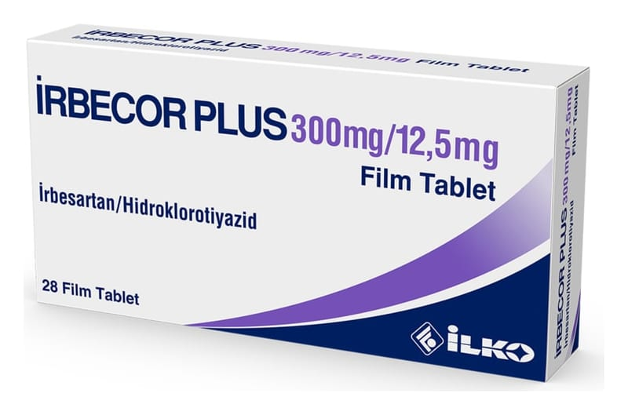

Irbecor Plus 300 mg /12.5 mg Film Tablet, 28 Adet

Ne için kullanılır
KT · Bölüm 1• İRBECOR PLUS irbesartan ve hidroklorotiyazid adlı iki etkin maddenin kombinasyonudur. • İRBECOR PLUS 300 mg irbesartan ve 12,5 mg hidroklorotiyazid içerir. • İrbesartan, anjiyotensin II reseptör antagonistleri olarak bilinen bir tansiyon düşürücü (antihipertansif) ilaç grubuna dahildir. Anjiyotensin-II vücutta üretilen bir maddedir ve kan damarlarında bulunan reseptörlerine bağlanarak damarları büzer. Bu durum kan basıncının artmasına yol açar. İrbesartan, anjiyotensin-II maddesinin bu reseptörlere bağlanmasını önler. Bu sayede kan damarları gevşer ve kan basıncı düşer. • Hidroklorotiyazid, tiyazid grubu idrar söktürücü (diüretikler) ilaçlardandır. İdrar çıkarılmasını artırır ve bu da kan basıncının düşmesine neden olur. • İRBECOR PLUS içindeki iki etkin madde birlikte, bu ilaçların tek başlarına verildiklerinde görülene nispeten kan basıncını daha ileri şekilde düşürürler. • İRBECOR PLUS yüksek kan basıncının (esansiyel hipertansiyon) tedavisinde kullanılır. • Doktorunuz size İRBECOR PLUS'ı aşağıdaki nedenlerden dolayı reçetelemiş olabilir:
- Kan basıncınız (tansiyonunuz) yüksekse, düşürmek için - Kan basıncınız tek başına irbesartan veya hidroklorotiyazid kullanmanıza rağmen yeterli oranda kontrol altına alınamadığı için • İRBECOR PLUS, 28 film kaplı tablet içeren blister ambalajlarda kullanıma sunulmaktadır.
İRBECOR PLUS, yavruağzı renkli, oval şekilli, bikonveks, çentiksiz film kaplı tabletler şeklindedir.